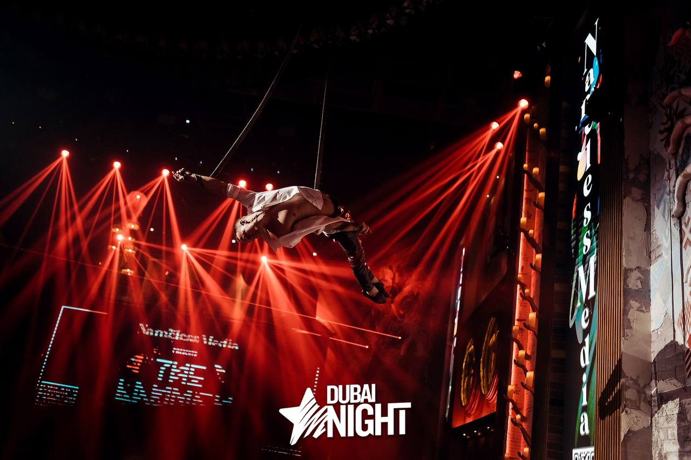
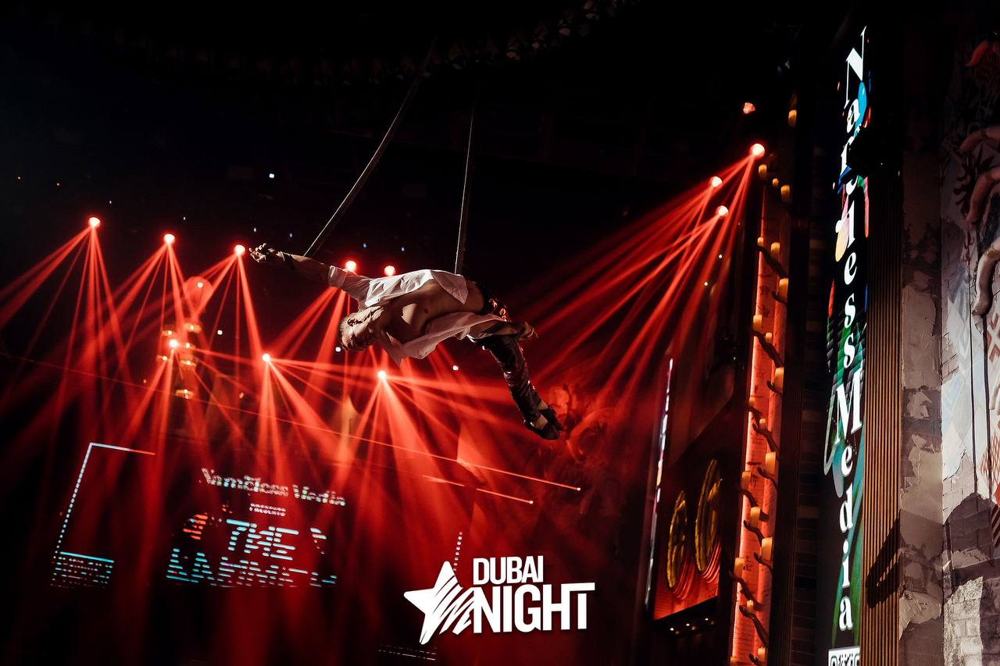

About Me
Привіт! Я Вадим, професійний повітряний гімнаст з більш ніж 8-річним досвідом роботи. Моя пристрасть до гімнастики привела мене в дивовижні місця по всьому світу, включаючи Китай, Туреччину та ОАЕ. Протягом років практики я вивчив безліч стилів та технік, що дозволяє мені створювати унікальні виступи, повні грації та краси.
Hello! I'm Vadim, a professional trapeze artist with more than 8 years of experience. My passion for gymnastics has taken me to amazing places around the world including China, Turkey and the UAE. Over the years of practice, I have mastered many styles and techniques, allowing me to create unique performances full of grace and beauty.


 


I'm available for freelance work
My Portfolio
Китай 2015-2016
У 2015–2016 роках я мав унікальну можливість працювати в Китаї у цирковому виставі. Це був дивовижний досвід, повний випробувань та нових відкриттів. У цьому захоплюючому світі я зміг використати свої навички повітряного гімнаста та створити виступи, які захоплювали дух глядачів. Робота в Китаї надала мені цінний досвід роботи у міжнародній команді та дозволила розширити мої професійні знання. Цей період залишиться незабутнім у моїй кар'єрі, і я вдячний за можливість зануритися у культуру та творчу енергію Китаю.
View ShowКитай 2016-2017
У 2015–2016 роках я був частиною унікального театрального проекту в Китаї. Цей період був для мене неймовірним творчим зростанням і професійним розвитком. Робота в китайському театрі дала мені цінний досвід співпраці з місцевими артистами та режисерами, а також дозволила розширити мої горизонти в області сценічного мистецтва. Завдяки цій роботі я зміг поглибити знання про культуру Китаю та вивчити нові методи творчості. Цей досвід став для мене справжнім викликом, який допоміг мені стати кращим професіоналом і відкрити для себе нові горизонти в світі театрального мистецтва.
View Project
Китай 2017-2018
У період з 2017 по 2018 роки я мав унікальну можливість працювати в Китаї в цирковому виступі. Це був захоплюючий період у моїй кар'єрі, повний яскравих вражень і творчих досягнень. В цирку я навчався і працював над різними акробатичними номерами, брав участь у створенні та втіленні різноманітних хореографічних вставок. Цей досвід допоміг мені покращити свої навички воздушного гімнаста і розширити арсенал трюків та виступів. Робота в китайському цирку також дала мені можливість ознайомитися з унікальною культурою та традиціями цієї країни, що надихнуло мене на створення нових та захопливих вистав.
View Project
Китай 2018-2019
У період з 2018 по 2019 роки я приєднався до команди нічного клубу "Oscar" в Китаї, де продовжив свою творчу діяльність як воздушний гімнаст. Робота в нічному клубі була захоплюючим досвідом, який дав мені можливість не лише продемонструвати своє майстерство та талант на новій сцені, а й розширити свій художній арсенал. У "Oscar" я брав участь у створенні унікальних номерів, які поєднували в собі високий рівень акробатики, елегантність та харизму. Робота в нічному клубі надала мені цінний досвід взаємодії з аудиторією різних культур та національностей, що збагатило мій творчий шлях і надихнуло на нові творчі ідеї.
View Project
Турция 2020-2022
У період з 2020 по 2022 роки я працював у Туреччині, де продовжив свою кар'єру воздушного гімнаста. Цей період був для мене значущим, оскільки Туреччина надала мені нові можливості для розвитку та самовираження. Робота в Туреччині подарувала мені незабутні враження і досвід, розширивши горизонти мого творчого росту та дозволивши втілити в життя нові ідеї і концепції в виступах. Я був частиною команди професіоналів, з якими вдалося створити захоплюючі та запам'ятовуючі номери, завоювавши серця глядачів. Робота в Туреччині стала для мене важливим етапом у моїй кар'єрі, що допомогло мені вирости як артисту та розкрити свій творчий потенціал.
View Project
Дубай 2022-2023
У період з 2022 по 2023 роки я працював у Дубаї, де продовжив свою кар'єру в якості воздушного гімнаста. Робота в цьому світовому центрі розваг була для мене натхненним та захоплюючим досвідом. У Дубаї я брав участь у виступах у престижних розважальних комплексах, де міг демонструвати свої навички перед великою аудиторією з різних країн світу. Моя участь у шоу в Дубаї дозволила мені зустрітися та працювати з найкращими артистами та професіоналами розважальної індустрії. Ми створювали захоплюючі вистави, які не лише розважали глядачів, але й надихали їх на нові висоти. Цей досвід став для мене цінним кроком у розвитку моєї кар'єри і дозволив розширити свої горизонти як артиста.
View ProjectПластика, пристрасть, професіоналізм: у кожному виступі - унікальність!
Його рухи виблискують витонченість і енергію, втілюючи пристрасть до свого мистецтва.